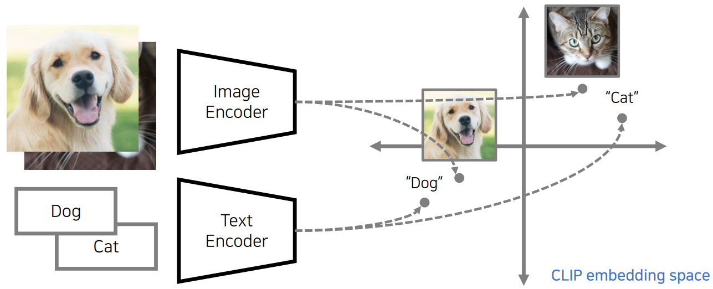

Introduction
Contents
Introduction¶
Recent advances in machine learning have created opportunities for “AI” technologies to assist unlocking creativity in powerful ways. PyTTI is a toolkit that facilitates image generation, animation, and manipulation using processes that could be thought of as a human artist collaborating with AI assistants.
If you’re interested in contributing (even if you aren’t a coder and just have an idea for something to add to the documentation), please visit our issue tracker: https://github.com/pytti-tools/pytti-core/issues
The underlying technology is complex, but you don’t need to be a deep learning expert or even know coding of any kind to use these tools. Understanding the underlying technology can be extremely helpful to leveraging it effectively, but it’s absolutely not a pre-requisite. You don’t even need a powerful computer of your own: you can play with this right now on completely free resources provided by google: 
How it works¶
One of our primary goals here is to empower artists with these tools, so we’re going to keep this discussion at an extremely high level. This documentaiton will be updated in the future with links to research publications and citations for anyone who would like to dig deeper.
What is a “Latent Space?”¶
Many deep learning methods can be boiled down to the following process:
Take in some input, like an image or a chunk of text
Process the input in a way that discards information we don’t care about, leaving behind a compressed representation that is “information dense”
Treat this representation as coordinates in a space whose dimensions/axes/regions carry information we care about (aka a “projection” of our data into a kind of “information space”)
We can now construct meaningful measures of “similarity” by measuring how far apart items are in this space.
The “latent space” of a model is this “information space” in which it represents its inputs. Because of the process we used to construct it, it’s often the case that locations and directions in this space are semantically meaningful. For example, if we train a model on a dataset of pictures of numbers, we might find that our data forms clusters such that images of the same number tend to group together. In the model’s latent space, the images are asigned coordinates that are semantically meaningful, and can essentially be interpreted as the “eight-ness” or “five-ness” of the content of an image.

The CLIP latent space¶
Normally, a latent space is very specific to a particular kind of data. For example, in the above example, we have a latent space that we can project images into. Let’s call this a “single-modality” latent, where the above example’s latent only supports the image modality. In contrast, a text model (like for predicting the sentiment of a sentence) would probably have a single-modality latent into which it can only project text, and so on.
One of the core components of PyTTI (and most text-guided AI image generation methods) is a technique which is able to project both text and images into the same latent space, a “multi-modal” space which can be used to represent either text or images.

As with a single-modality space, we can measure how similar two chunks of text are or how similar two images are in this space, where “similar” is a measure of their semantic content. What’s really special here is that now we can measure how similar the semantic content of an image is relative to the semantic content of some chunk of text!
A hand-wavy way to think about this is as if there is a region in the multi-modal latent space that represents something like the concept “dog”. So if we project an image containing a picture of a dog into this space, it’ll be close to the region associated with this platonic “dog” concept. Similarly, if we take a chunk of text and project it into this space, we expect it will end up somewhere close the “dog” concept’s location as well.
This is the key to how PyTTI uses CLIP to “guide” image generation. PyTTI takes an image, measures how near or far away it is from the latent space representation of the guiding prompts you provided, and tries to adjust the image in ways that move its latent space representation closer to the latent space reprsentation of the prompt.